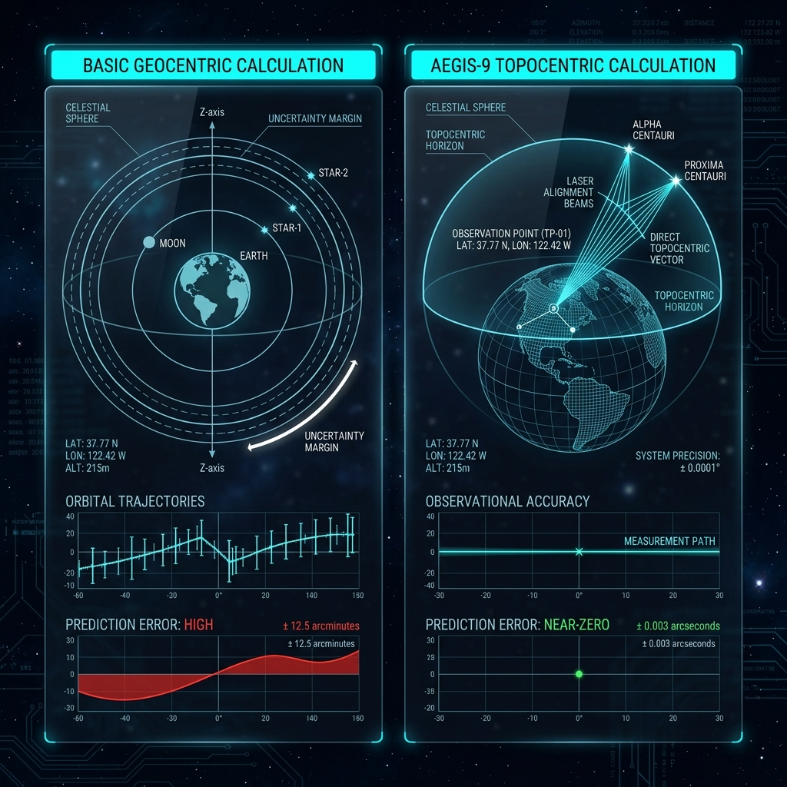

自分を深く知り、これからを前向きに整える鑑定書
生年月日・出生時間・出生地をもとに、できる限り丁寧に計算した鑑定データを使用します。
そのデータを、西洋占星術・四柱推命・マヤ暦の視点から読み解き、自己理解と前向きな行動につながるPDF鑑定書としてお届けします。
読みやすいPDF鑑定書
ページ数の多さではなく、読み返しやすさと実用性を大切に。鑑定メニューごとに必要な情報を整理してお届けします。
複数の占術を統合
西洋占星術・四柱推命・マヤ暦の視点から、あなたの本質・才能・人生の流れを多角的に読み解きます。
前向きな言葉でお届け
一般的に弱点や課題とされる要素も、あなたらしく進むための個性や才能として読み解きます。
鑑定について
AEGIS-9は、Amber Lightが運営するPDF鑑定サービスです。
AIによるデータ整理と、人の視点による前向きな読み解きを組み合わせ、
お一人おひとりの本質・才能・人生の流れを丁寧に言葉にしてお届けします。
鑑定は、未来を断定するものではなく、
自分自身を深く知り、これからを前向きに整えるためのものです。
丁寧に導き出される
パーソナル・データ
一般的な占いサイトの簡易計算ではなく、お一人おひとりの出生時間や緯度・経度まで考慮し、できる限り丁寧な計算システムを使用しています。その精密なデータをベースに、経験に基づく温かい視点を重ね合わせて鑑定書を作成します。
- 多角的なアプローチ: 西洋占星術・四柱推命・マヤ暦の3つの視点からの総合的な分析。
- あなただけのデータ: テンプレートではない、個人の星の配置に基づく読み解き。
- 実用的なアドバイス: 当てることよりも、どう活かすかに焦点を当てた鑑定。

鑑定メニュー
あなたの知りたいテーマに合わせてお選びください。どのメニューも前向きな言葉で丁寧に作成します。
※鑑定書の分量はメニューやご相談内容により前後します。ページ数の多さではなく、読みやすさと実用性を大切に作成しています。
| 商品名 | 通常価格 | リリース記念価格 |
|---|---|---|
| ミニ鑑定 |
¥2,980 | ¥1,980 |
| 相性鑑定 |
¥4,800 | ¥3,980 |
| 天職鑑定 |
¥6,800 | ¥5,800 |
| 宿命鑑定 |
¥12,800 | ¥9,800 |
| 10年運気表 |
¥8,800 | ¥6,800 |
どの鑑定を選べばいい？
お申込み前に、必ず「特定商取引法に基づく表記」および「プライバシーポリシー」をご確認ください。
決済完了後のお客様都合によるキャンセル・返金は、原則としてお受けできません。
お申込みの流れ
鑑定メニューを選ぶ
本ページよりご希望の鑑定メニューをお選びください。
Squareで決済
クレジットカードにて安全に決済いただけます。
Googleフォームに入力
決済完了後、生年月日等の必要情報をご入力ください。
鑑定書を作成
いただいた情報をもとに、お一人おひとりの鑑定書を丁寧に作成します。
PDFで納品
通常7営業日以内に、ご指定のメールアドレスへお届けします。
よくある質問
お申込み前に多くいただくご質問をまとめました。
ご不明点がある場合は、公式LINEよりお気軽にお問い合わせください。
Q. 出生時間が分からない場合でも申し込めますか？
はい、お申込みいただけます。
本鑑定では、より適切な鑑定書を作成するため、出生時間の入力をお願いしております。母子手帳などで正確な出生時間が確認できる場合は、その時刻をご入力ください。
正確な出生時間が分からない場合も、分かる範囲で最も近いと思われる時刻を必ずご入力ください。また、Googleフォーム内で出生時間の確認状況をお選びいただきます。
なお、出生時間が正確でない場合、西洋占星術におけるハウス、アセンダント、月の位置など、一部の鑑定項目について精度が限定される場合があります。
Q. 鑑定書はいつ届きますか？
決済完了後、およびGoogleフォームによる必要情報の入力完了後、通常7営業日以内にPDF鑑定書をメールにてお届けいたします。
入力内容に不備がある場合、出生情報等の確認が必要な場合、お申込みが集中している場合は、追加でお時間をいただく場合があります。その場合は、ご登録いただいたメールアドレス宛にご連絡いたします。
Q. 鑑定書はどのように受け取れますか？
鑑定書は、PDF形式でメールにてお届けいたします。
お申込み時にご入力いただいたメールアドレス宛に送付いたしますので、入力間違いにご注意ください。また、迷惑メール設定等によりメールが届かない場合がありますので、事前に info@amberlight.co.jp からのメールを受信できるよう設定をお願いいたします。
Q. キャンセルや返金はできますか？
本サービスは、お客様ごとに個別作成するPDF鑑定書のため、決済完了後のお客様都合によるキャンセル・返金は、原則としてお受けできません。
ただし、重複決済が確認された場合、当方の都合により鑑定書を作成・納品できない場合、お申込み内容と異なる鑑定メニューで納品した場合などは、内容を確認のうえ、返金または再作成等の対応を行います。
鑑定結果の解釈、感じ方、期待との相違、鑑定内容への主観的な不満を理由とする返金はお受けできません。
Q. 相性鑑定にはどのような情報が必要ですか？
相性鑑定では、鑑定を受ける方ご本人と、お相手の情報が必要です。
主に以下の情報をご入力いただきます。
- ご本人の生年月日、出生時間、出生地
- お相手の生年月日、出生時間、出生地
- おふたりの関係性
- 鑑定で特に見てほしいテーマ
お相手の出生時間が分からない場合も、分かる範囲で最も近いと思われる時刻をご入力ください。出生時間が正確でない場合、一部の鑑定項目について精度が限定される場合があります。
Q. 鑑定結果は保証されますか？
本鑑定は、自己理解や今後の行動を前向きに考えるための参考情報として提供するものです。
医療、法律、投資、進学、転職、結婚、出産、その他専門的判断を必要とする事項について、特定の結果を保証するものではありません。
また、鑑定結果は未来を断定するものではなく、ご自身の本質や才能、人生の流れを見つめるためのヒントとしてお受け取りください。最終的な判断は、ご自身の意思と責任にてお願いいたします。
Q. プレゼントとして利用できますか？
はい、プレゼントとしてもご利用いただけます。大切な方の誕生日や記念日、自分を見つめ直すきっかけとしてのギフトにもおすすめです。
プレゼント利用の場合も、鑑定に必要な生年月日・出生時間・出生地などの情報が必要です。また、個人情報を取り扱うため、可能な範囲でご本人の同意を得たうえでお申込みください。
鑑定書は、お申込みいただいた方のメールアドレス宛にPDFで納品いたします。プレゼント用としてお渡しされる場合は、納品後にお客様ご自身でお相手にお渡しください。
鑑定メニューを選んで、お申し込みください
各メニューの申込ボタンより決済ページへお進みください。
決済完了後、鑑定に必要な情報をご入力いただくGoogleフォームをご案内します。
どのメニューを選べばよいか迷う方は、公式LINEよりお気軽にご相談ください。
無理なご案内はいたしませんので、ご自身に合う鑑定を一緒に確認できます。
【免責事項・ご注意事項】
本鑑定は、自己理解や今後の行動を前向きに考えるための参考情報として提供するものです。
医療・法律・投資・進学・転職・結婚等に関する専門的判断の代替ではなく、特定の結果を保証するものではありません。最終的なご判断は、ご自身の意思と責任にてお願いいたします。